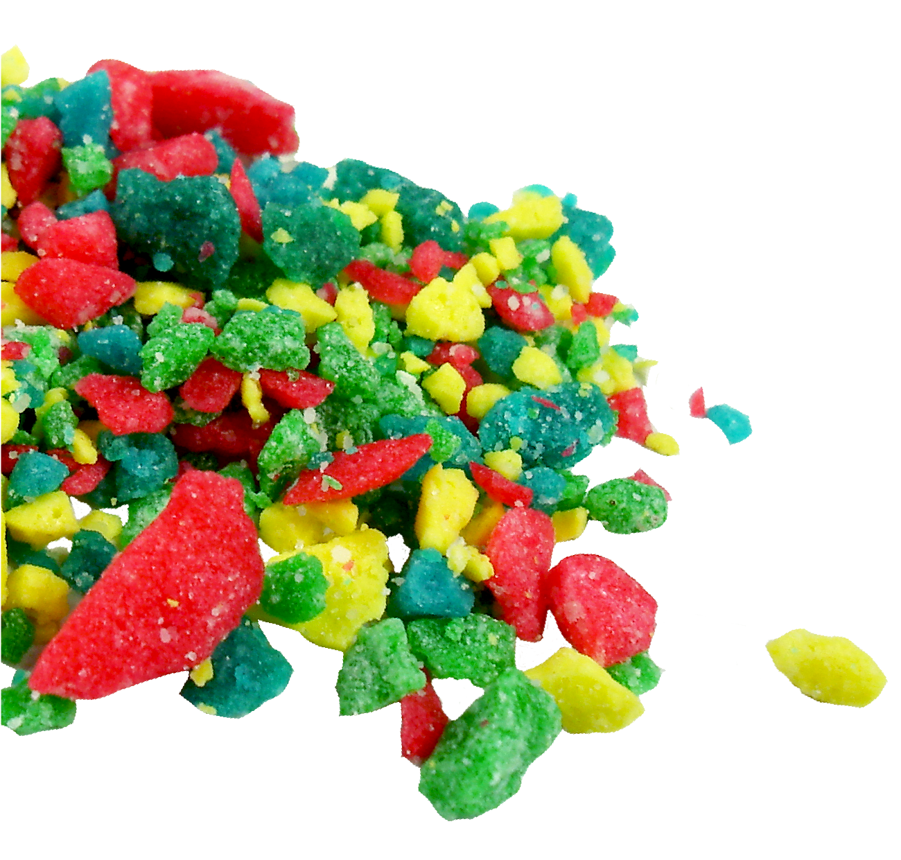
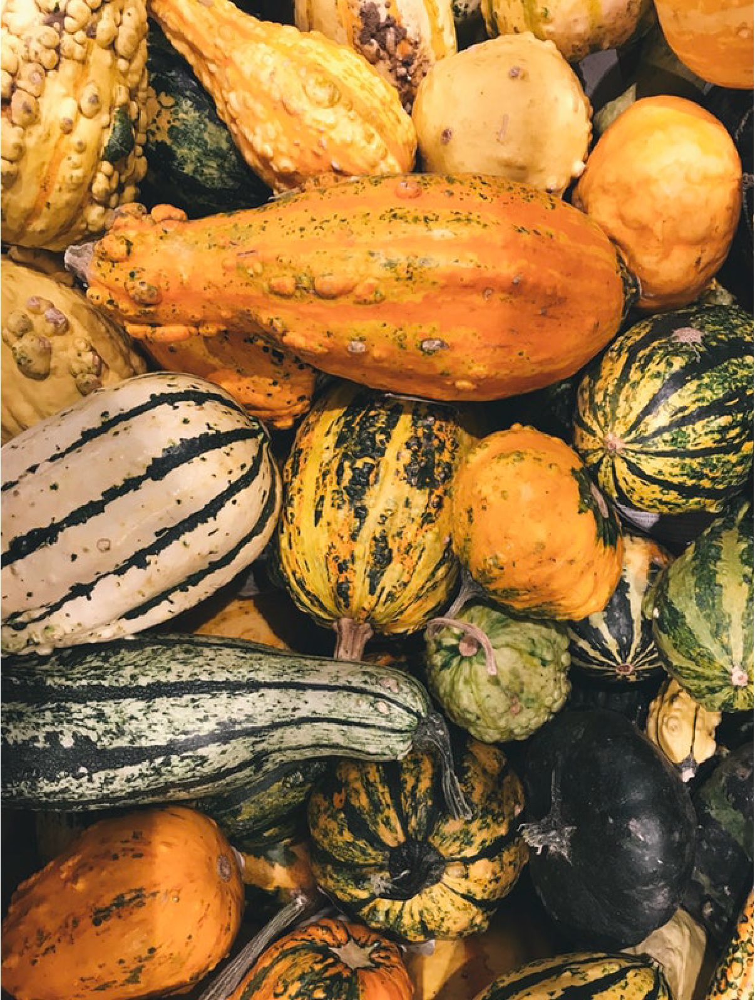
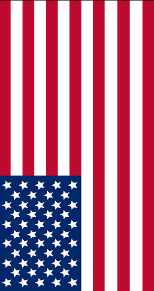
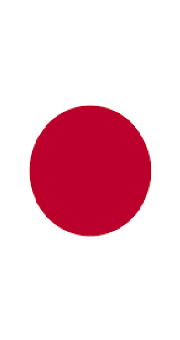
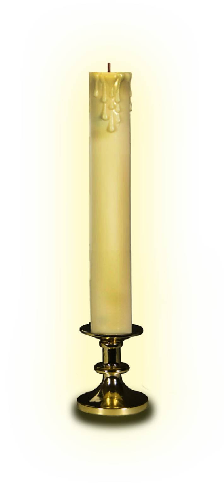

“trick or treat”은 1920년대 후반부터 존재했던 오랜 할로윈의 전통이다. 간식거리 같은 음식에 대한 대가로 구절을 낭독하고 때로 환영받지 못하면 그들에게 불행을 경고하는 사례가 많다.
WHAT IS 'TRICK OR TREAT'?
매년 10월 31일에 진행. 많은 국가에 있는 아이, 성인을
위한 Halloween만의 의식 관례. 오늘날 핼러윈의 대표
적인 행사로, 아이들이 마녀나 요정, 유령, 인기 만화의
주인공 등으로 분장하고 집집마다 다니면서 먹을거리를
얻는 놀이를 ‘트릭 오어 트릿’ (trick or treat)이라고 불리운다.
일반적으로 ‘treat’은
간식 거리의 형태이며, ‘trick’은 대우가 보
통 주어지지 않을 때 행해지는 것을 말한다. 아이들은 집 주인이 거부할 경우, 문 앞에
더러운 것을 놓아두거나 낙서를 하는 등 장난을 쳤다고 한다.
THE ORIGIN OF JACK-O-LANTERN.
전설에 따르면 옛날에 잭이라는 사람이 꽤
인색한 사람이라 천국에 들어가지 못했다
고 한다. 또 잭은 악마들에게도 장난을 많
이 쳤기 때문에 지옥에도 갈 수 없었다.
그 결과 잭은 최후의 심판의 날이 올 때
까지 랜턴을 가지고 땅 위를 걸어 다닐 수
밖에 없었다. 그래서 아일랜드 사람들은
순무, 감자들을 가지고 속을 파내서 무서
운 얼굴로 만들었던 것이다.

>
COUNTRIES WHERE "TRICK OR TREAT !" is used :“ trick or treat ! ”

아일랜드계 이민자들을 받아들
이면서 유행하기 시작한 것이
고도로 상업화된 놀이가 되고
이것이 다시 미디어를 거치면 서
세계적으로 퍼지기 시작한 것이다.“ trick nó cóir leighis ! ”
미국으로 이주한 25만여명의 아일랜드 이민자들이 뉴 잉글
랜드와 메릴랜드 등에서 할로
윈 축제를 치뤘는데 이 무렵 할
로윈은 한 해의 수확을 마친걸 축하하며 이웃과 세상을 떠난 이를 추억하는 형식이다. “ Cleas no tiodhlac ! ”
본래의 할로윈 축제는 스코틀랜 드
·아일랜드 이민자들이 치르는 소규모 지역축제였다. 이민자 1백
만명이 미국으로 대거 유입되어
미국에 정착하면서 할로윈 축제
가 전역으로 퍼졌다.“ トリックまたはトリートメント ! ”

1990년대 도쿄 디즈니랜드에
할로윈 행사를 도입, 확산되기
시작하며 2000년대 회사들이
할로윈 시장에 뛰어, 코스프레
를 좋아하는 일본의 분위기와 맞물려 급격히 확산되었다.
" TRICK OR TREAT ! "영국과 아일랜드의
특정 휴일에 전통에 따라 의상을 입은 채로 가거나, 음식이나 음료를 대가로 짧은 장면이나 희곡을 연주하는 것과 관련있다.
할로윈에 대한 ‘trick or treat’ 관습은 초자연적인 존재 또는 죽은 자의 영혼이 이 시간에 지구를 배회했으며, 그것을 달래야 할 필요가 있다는 신념에서 비롯되었다.

¿Cleas no tiodhlac?¿Cleas no tiodhlac?¿Cleas no tiodhlac?¿Cleas no tiodhlac?¿Cleas no tiodhlac?